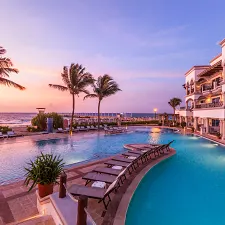

Hilton Playa del Carmen
El Hilton Playa del Carmen es un hotel con calificación de 5 estrellas ganador del galardón Four Diamonds, gracias a su calidad de servicios e instalaciones de primera clase. El alojamiento es solo para adultos y se ubica en la Riviera Maya, frente al mar.

Kore Tulum Retreat and Spa Resort
El Kore Tulum Retreat and Spa Resort es un hotel boutique de 5 estrellas solo para adultos situado en primera línea de playa, ofreciendo régimen de todo incluido.

Hard Rock Hotel Riviera Maya
El Hard Rock Hotel Riviera Maya es un resort de lujo de 5 estrellas cercano al complejo Puerto Aventuras, en México, destaca por sus instalaciones de ambiente tropical y sus playas vírgenes.